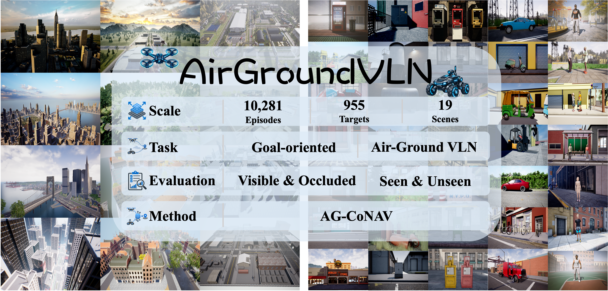

AirGroundVLNA Large-Scale Benchmark for Goal-Oriented Air-Ground Collaborative Vision-and-Language Navigation

Abstract
Goal-oriented Vision-and-Language Navigation (VLN) requires agents to locate and reach targets described in natural language without prescribed routes. Air-ground collaboration is valuable for tasks requiring both wide-area search and fine-grained localization. However, systematic study of goal-oriented air-ground collaborative VLN remains limited by the lack of large-scale, diverse benchmarks and two core challenges: 1) substantial differences between aerial and ground views, together with useful observations becoming unavailable as navigation proceeds, make it difficult to maintain spatially consistent context across platforms and over time; and 2) asymmetric spatial observability makes ground perception locally detailed but spatially limited and aerial perception broad but locally coarse, limiting the reliability of single-platform planning. To address these limitations, we introduce AirGroundVLN, a benchmark containing 10,281 navigation episodes and 955 target instances across 19 Unreal Engine environments, with seen/unseen splits and an aerial-visibility protocol for systematic evaluation. Alongside the benchmark, we propose AG-CoNAV, a trainable reference framework comprising two key components: Spatiotemporally Anchored Collaborative Memory (SACM) and Aerial-Guided Regional-to-Local Planning (AGRLP). SACM maintains and retrieves spatially consistent historical context across aerial and ground observations. Meanwhile, AGRLP combines regional aerial guidance with fine-grained ground navigation. Extensive experiments demonstrate the effectiveness of AG-CoNAV and establish AirGroundVLN as a comprehensive benchmark for future exploration.
BibTeX
@article{airgroundvln,
title={AirGroundVLN: A Large-Scale Benchmark for Goal-Oriented Air-Ground Collaborative Vision-and-Language Navigation},
author={Zhenxuan Zeng and Qingle Wu and Wei Suo and Maojia Wu and Bairong Zhang and Hangzheng Yu and Peng Wang},
year={2026}
}